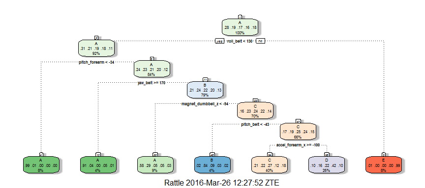
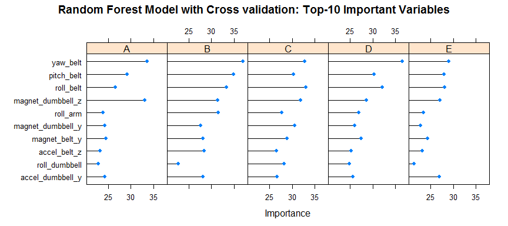

Machine Learning - Prediction Assigment
Enrique Reveron
March 26, 2016
Executive Summary
This is a project report related with the Machine Learning Course, the target is to predict the classe variable (the manner in which they did the exercise) in the training set.
The report include the following sections:
- Load the Training and Test Data and perform some basic exploratory data analyses.
- Make some transformation to the data.
- Build a model to predict the classe variable.
- Use the best model with the Test Data to provide a Prediction.
- State your conclusions.
1. Load the Training and Testing data and perform some basic exploratory data analyses.
Load the neccesary libraries and the datasets, let's see some general information about the data.
# Load the neccesary libraries
library(caret)## Loading required package: lattice
## Loading required package: ggplot2
library(rpart)
library(rpart.plot)
library(rattle)## Rattle: A free graphical interface for data mining with R.
## Version 4.1.0 Copyright (c) 2006-2015 Togaware Pty Ltd.
## Type 'rattle()' to shake, rattle, and roll your data.
library(randomForest)## randomForest 4.6-12
## Type rfNews() to see new features/changes/bug fixes.
##
## Attaching package: 'randomForest'
## The following object is masked from 'package:ggplot2':
##
## margin
# For reproducibility
set.seed(12345)
setwd("D:/Coursera/Machine Learning")
# Load the Training Data
if (file.exists("training_data.RData")) {
load("training_data.RData")
} else {
if (!file.exists("pml-training.csv")) {
stop("no valid training data file in working directory: pml-training.csv")
}
training_data <- read.csv("pml-training.csv",
na.strings=c("NA","#DIV/0!",""),
stringsAsFactors = FALSE)
save(training_data,file="training_data.RData")
}
# Load the Testing Data
if (file.exists("testing_data.RData")) {
load("testing_data.RData")
} else {
if (!file.exists("pml-testing.csv")) {
stop("no valid testing data file in working directory: pml-testing.csv")
}
testing_data <- read.csv("pml-testing.csv",
na.strings=c("NA","#DIV/0!",""),
stringsAsFactors = FALSE)
save(testing_data,file="testing_data.RData")
}
# Set classe as factor
training_data$classe <- as.factor(training_data$classe)
# Show some information about the data
dim(training_data)## [1] 19622 160
dim(testing_data)## [1] 20 160
# How many classes have the varible to predict
summary(training_data$classe)## A B C D E
## 5580 3797 3422 3216 3607
We can see that the Training Dataset include 19622 rows and 160 variables and the Testing Dataset include 20 rows and 160 variables. The classe variable (the one to predict) include five classes (A,B,C,D and E).
According with the information related with the data:
1.1 Description
Using devices such as Jawbone Up, Nike FuelBand, and Fitbit it is now possible to collect a large amount of data about personal activity relatively inexpensively. These type of devices are part of the quantified self movement - a group of enthusiasts who take measurements about themselves regularly to improve their health, to find patterns in their behavior, or because they are tech geeks. One thing that people regularly do is quantify how much of a particular activity they do, but they rarely quantify how well they do it. In this project, your goal will be to use data from accelerometers on the belt, forearm, arm, and dumbell of 6 participants. They were asked to perform barbell lifts correctly and incorrectly in 5 different ways. More information is available from the website here: http://groupware.les.inf.puc-rio.br/har (see the section on the Weight Lifting Exercise Dataset).
1.2 The meaning of classe
A: exactly according to the specification.
B: throwing the elbows to the front.
C: lifting the dumbbell only halfway.
D: lowering the dumbbell only halfway.
E: throwing the hips to the front.
1.3 Dataset Source
Velloso, E.; Bulling, A.; Gellersen, H.; Ugulino, W.; Fuks, H. Qualitative Activity Recognition of Weight Lifting Exercises. Proceedings of 4th International Conference in Cooperation with SIGCHI (Augmented Human '13) . Stuttgart, Germany: ACM SIGCHI, 2013.
http://groupware.les.inf.puc-rio.br/har
2. Cleaning the Data.
2.1 Remove NAs Variables.
Let's see the structure of the Training data:
str(training_data)## 'data.frame': 19622 obs. of 160 variables:
## $ X : int 1 2 3 4 5 6 7 8 9 10 ...
## $ user_name : chr "carlitos" "carlitos" "carlitos" "carlitos" ...
## $ raw_timestamp_part_1 : int 1323084231 1323084231 1323084231 1323084232 1323084232 1323084232 1323084232 1323084232 1323084232 1323084232 ...
## $ raw_timestamp_part_2 : int 788290 808298 820366 120339 196328 304277 368296 440390 484323 484434 ...
## $ cvtd_timestamp : chr "05/12/2011 11:23" "05/12/2011 11:23" "05/12/2011 11:23" "05/12/2011 11:23" ...
## $ new_window : chr "no" "no" "no" "no" ...
## $ num_window : int 11 11 11 12 12 12 12 12 12 12 ...
## $ roll_belt : num 1.41 1.41 1.42 1.48 1.48 1.45 1.42 1.42 1.43 1.45 ...
## $ pitch_belt : num 8.07 8.07 8.07 8.05 8.07 8.06 8.09 8.13 8.16 8.17 ...
## $ yaw_belt : num -94.4 -94.4 -94.4 -94.4 -94.4 -94.4 -94.4 -94.4 -94.4 -94.4 ...
## $ total_accel_belt : int 3 3 3 3 3 3 3 3 3 3 ...
## $ kurtosis_roll_belt : num NA NA NA NA NA NA NA NA NA NA ...
## $ kurtosis_picth_belt : num NA NA NA NA NA NA NA NA NA NA ...
## $ kurtosis_yaw_belt : logi NA NA NA NA NA NA ...
## $ skewness_roll_belt : num NA NA NA NA NA NA NA NA NA NA ...
## $ skewness_roll_belt.1 : num NA NA NA NA NA NA NA NA NA NA ...
## $ skewness_yaw_belt : logi NA NA NA NA NA NA ...
## $ max_roll_belt : num NA NA NA NA NA NA NA NA NA NA ...
## $ max_picth_belt : int NA NA NA NA NA NA NA NA NA NA ...
## $ max_yaw_belt : num NA NA NA NA NA NA NA NA NA NA ...
## $ min_roll_belt : num NA NA NA NA NA NA NA NA NA NA ...
## $ min_pitch_belt : int NA NA NA NA NA NA NA NA NA NA ...
## $ min_yaw_belt : num NA NA NA NA NA NA NA NA NA NA ...
## $ amplitude_roll_belt : num NA NA NA NA NA NA NA NA NA NA ...
## $ amplitude_pitch_belt : int NA NA NA NA NA NA NA NA NA NA ...
## $ amplitude_yaw_belt : num NA NA NA NA NA NA NA NA NA NA ...
## $ var_total_accel_belt : num NA NA NA NA NA NA NA NA NA NA ...
## $ avg_roll_belt : num NA NA NA NA NA NA NA NA NA NA ...
## $ stddev_roll_belt : num NA NA NA NA NA NA NA NA NA NA ...
## $ var_roll_belt : num NA NA NA NA NA NA NA NA NA NA ...
## $ avg_pitch_belt : num NA NA NA NA NA NA NA NA NA NA ...
## $ stddev_pitch_belt : num NA NA NA NA NA NA NA NA NA NA ...
## $ var_pitch_belt : num NA NA NA NA NA NA NA NA NA NA ...
## $ avg_yaw_belt : num NA NA NA NA NA NA NA NA NA NA ...
## $ stddev_yaw_belt : num NA NA NA NA NA NA NA NA NA NA ...
## $ var_yaw_belt : num NA NA NA NA NA NA NA NA NA NA ...
## $ gyros_belt_x : num 0 0.02 0 0.02 0.02 0.02 0.02 0.02 0.02 0.03 ...
## $ gyros_belt_y : num 0 0 0 0 0.02 0 0 0 0 0 ...
## $ gyros_belt_z : num -0.02 -0.02 -0.02 -0.03 -0.02 -0.02 -0.02 -0.02 -0.02 0 ...
## $ accel_belt_x : int -21 -22 -20 -22 -21 -21 -22 -22 -20 -21 ...
## $ accel_belt_y : int 4 4 5 3 2 4 3 4 2 4 ...
## $ accel_belt_z : int 22 22 23 21 24 21 21 21 24 22 ...
## $ magnet_belt_x : int -3 -7 -2 -6 -6 0 -4 -2 1 -3 ...
## $ magnet_belt_y : int 599 608 600 604 600 603 599 603 602 609 ...
## $ magnet_belt_z : int -313 -311 -305 -310 -302 -312 -311 -313 -312 -308 ...
## $ roll_arm : num -128 -128 -128 -128 -128 -128 -128 -128 -128 -128 ...
## $ pitch_arm : num 22.5 22.5 22.5 22.1 22.1 22 21.9 21.8 21.7 21.6 ...
## $ yaw_arm : num -161 -161 -161 -161 -161 -161 -161 -161 -161 -161 ...
## $ total_accel_arm : int 34 34 34 34 34 34 34 34 34 34 ...
## $ var_accel_arm : num NA NA NA NA NA NA NA NA NA NA ...
## $ avg_roll_arm : num NA NA NA NA NA NA NA NA NA NA ...
## $ stddev_roll_arm : num NA NA NA NA NA NA NA NA NA NA ...
## $ var_roll_arm : num NA NA NA NA NA NA NA NA NA NA ...
## $ avg_pitch_arm : num NA NA NA NA NA NA NA NA NA NA ...
## $ stddev_pitch_arm : num NA NA NA NA NA NA NA NA NA NA ...
## $ var_pitch_arm : num NA NA NA NA NA NA NA NA NA NA ...
## $ avg_yaw_arm : num NA NA NA NA NA NA NA NA NA NA ...
## $ stddev_yaw_arm : num NA NA NA NA NA NA NA NA NA NA ...
## $ var_yaw_arm : num NA NA NA NA NA NA NA NA NA NA ...
## $ gyros_arm_x : num 0 0.02 0.02 0.02 0 0.02 0 0.02 0.02 0.02 ...
## $ gyros_arm_y : num 0 -0.02 -0.02 -0.03 -0.03 -0.03 -0.03 -0.02 -0.03 -0.03 ...
## $ gyros_arm_z : num -0.02 -0.02 -0.02 0.02 0 0 0 0 -0.02 -0.02 ...
## $ accel_arm_x : int -288 -290 -289 -289 -289 -289 -289 -289 -288 -288 ...
## $ accel_arm_y : int 109 110 110 111 111 111 111 111 109 110 ...
## $ accel_arm_z : int -123 -125 -126 -123 -123 -122 -125 -124 -122 -124 ...
## $ magnet_arm_x : int -368 -369 -368 -372 -374 -369 -373 -372 -369 -376 ...
## $ magnet_arm_y : int 337 337 344 344 337 342 336 338 341 334 ...
## $ magnet_arm_z : int 516 513 513 512 506 513 509 510 518 516 ...
## $ kurtosis_roll_arm : num NA NA NA NA NA NA NA NA NA NA ...
## $ kurtosis_picth_arm : num NA NA NA NA NA NA NA NA NA NA ...
## $ kurtosis_yaw_arm : num NA NA NA NA NA NA NA NA NA NA ...
## $ skewness_roll_arm : num NA NA NA NA NA NA NA NA NA NA ...
## $ skewness_pitch_arm : num NA NA NA NA NA NA NA NA NA NA ...
## $ skewness_yaw_arm : num NA NA NA NA NA NA NA NA NA NA ...
## $ max_roll_arm : num NA NA NA NA NA NA NA NA NA NA ...
## $ max_picth_arm : num NA NA NA NA NA NA NA NA NA NA ...
## $ max_yaw_arm : int NA NA NA NA NA NA NA NA NA NA ...
## $ min_roll_arm : num NA NA NA NA NA NA NA NA NA NA ...
## $ min_pitch_arm : num NA NA NA NA NA NA NA NA NA NA ...
## $ min_yaw_arm : int NA NA NA NA NA NA NA NA NA NA ...
## $ amplitude_roll_arm : num NA NA NA NA NA NA NA NA NA NA ...
## $ amplitude_pitch_arm : num NA NA NA NA NA NA NA NA NA NA ...
## $ amplitude_yaw_arm : int NA NA NA NA NA NA NA NA NA NA ...
## $ roll_dumbbell : num 13.1 13.1 12.9 13.4 13.4 ...
## $ pitch_dumbbell : num -70.5 -70.6 -70.3 -70.4 -70.4 ...
## $ yaw_dumbbell : num -84.9 -84.7 -85.1 -84.9 -84.9 ...
## $ kurtosis_roll_dumbbell : num NA NA NA NA NA NA NA NA NA NA ...
## $ kurtosis_picth_dumbbell : num NA NA NA NA NA NA NA NA NA NA ...
## $ kurtosis_yaw_dumbbell : logi NA NA NA NA NA NA ...
## $ skewness_roll_dumbbell : num NA NA NA NA NA NA NA NA NA NA ...
## $ skewness_pitch_dumbbell : num NA NA NA NA NA NA NA NA NA NA ...
## $ skewness_yaw_dumbbell : logi NA NA NA NA NA NA ...
## $ max_roll_dumbbell : num NA NA NA NA NA NA NA NA NA NA ...
## $ max_picth_dumbbell : num NA NA NA NA NA NA NA NA NA NA ...
## $ max_yaw_dumbbell : num NA NA NA NA NA NA NA NA NA NA ...
## $ min_roll_dumbbell : num NA NA NA NA NA NA NA NA NA NA ...
## $ min_pitch_dumbbell : num NA NA NA NA NA NA NA NA NA NA ...
## $ min_yaw_dumbbell : num NA NA NA NA NA NA NA NA NA NA ...
## $ amplitude_roll_dumbbell : num NA NA NA NA NA NA NA NA NA NA ...
## [list output truncated]
We can see that exists many variables that have many NAs values. Let's remove the ones that have significant NAs values.
NA_variables <- apply(training_data,2,function(x) {sum(is.na(x))})
# Let's see the frequency of NA values per variable of the data
as.data.frame(table(NA_variables))## NA_variables Freq
## 1 0 60
## 2 19216 67
## 3 19217 1
## 4 19218 1
## 5 19220 1
## 6 19221 4
## 7 19225 1
## 8 19226 4
## 9 19227 2
## 10 19248 2
## 11 19293 1
## 12 19294 1
## 13 19296 2
## 14 19299 1
## 15 19300 4
## 16 19301 2
## 17 19622 6
We can see that 60 variables have 0 NA values, the rest (100 variables) have more than 19216 NAs values (more than 97%). So let's remove those variables from the data and only keep the ones that have 0 NAs values (60 variables)
training_data <- training_data[,which(NA_variables == 0)]
testing_data <- testing_data[,which(NA_variables == 0)]
dim(training_data);dim(testing_data)## [1] 19622 60
## [1] 20 60
We remove 100 variables, the data only have 60 variables now.
2.2 Remove Non Usefull Variables.
The first seven (7) variables are not related with the motion sensors, so we can remove it.
colnames(training_data)[1:7]## [1] "X" "user_name" "raw_timestamp_part_1"
## [4] "raw_timestamp_part_2" "cvtd_timestamp" "new_window"
## [7] "num_window"
training_data <- training_data[,8:length(colnames(training_data))]
testing_data <- testing_data[,8:length(colnames(testing_data))]
dim(training_data);dim(testing_data)## [1] 19622 53
## [1] 20 53
We remove 7 variables, the data only have 53 variables now.
2.3 Remove Near Zero Variance Variables.
Lets check if exists Near Zero Variance variables:
nzv_var <- nearZeroVar(training_data, saveMetrics=TRUE)
nzv_var## freqRatio percentUnique zeroVar nzv
## roll_belt 1.101904 6.7781062 FALSE FALSE
## pitch_belt 1.036082 9.3772296 FALSE FALSE
## yaw_belt 1.058480 9.9734991 FALSE FALSE
## total_accel_belt 1.063160 0.1477933 FALSE FALSE
## gyros_belt_x 1.058651 0.7134849 FALSE FALSE
## gyros_belt_y 1.144000 0.3516461 FALSE FALSE
## gyros_belt_z 1.066214 0.8612782 FALSE FALSE
## accel_belt_x 1.055412 0.8357966 FALSE FALSE
## accel_belt_y 1.113725 0.7287738 FALSE FALSE
## accel_belt_z 1.078767 1.5237998 FALSE FALSE
## magnet_belt_x 1.090141 1.6664968 FALSE FALSE
## magnet_belt_y 1.099688 1.5187035 FALSE FALSE
## magnet_belt_z 1.006369 2.3290184 FALSE FALSE
## roll_arm 52.338462 13.5256345 FALSE FALSE
## pitch_arm 87.256410 15.7323412 FALSE FALSE
## yaw_arm 33.029126 14.6570176 FALSE FALSE
## total_accel_arm 1.024526 0.3363572 FALSE FALSE
## gyros_arm_x 1.015504 3.2769341 FALSE FALSE
## gyros_arm_y 1.454369 1.9162165 FALSE FALSE
## gyros_arm_z 1.110687 1.2638875 FALSE FALSE
## accel_arm_x 1.017341 3.9598410 FALSE FALSE
## accel_arm_y 1.140187 2.7367241 FALSE FALSE
## accel_arm_z 1.128000 4.0362858 FALSE FALSE
## magnet_arm_x 1.000000 6.8239731 FALSE FALSE
## magnet_arm_y 1.056818 4.4439914 FALSE FALSE
## magnet_arm_z 1.036364 6.4468454 FALSE FALSE
## roll_dumbbell 1.022388 84.2065029 FALSE FALSE
## pitch_dumbbell 2.277372 81.7449801 FALSE FALSE
## yaw_dumbbell 1.132231 83.4828254 FALSE FALSE
## total_accel_dumbbell 1.072634 0.2191418 FALSE FALSE
## gyros_dumbbell_x 1.003268 1.2282132 FALSE FALSE
## gyros_dumbbell_y 1.264957 1.4167771 FALSE FALSE
## gyros_dumbbell_z 1.060100 1.0498420 FALSE FALSE
## accel_dumbbell_x 1.018018 2.1659362 FALSE FALSE
## accel_dumbbell_y 1.053061 2.3748853 FALSE FALSE
## accel_dumbbell_z 1.133333 2.0894914 FALSE FALSE
## magnet_dumbbell_x 1.098266 5.7486495 FALSE FALSE
## magnet_dumbbell_y 1.197740 4.3012945 FALSE FALSE
## magnet_dumbbell_z 1.020833 3.4451126 FALSE FALSE
## roll_forearm 11.589286 11.0895933 FALSE FALSE
## pitch_forearm 65.983051 14.8557741 FALSE FALSE
## yaw_forearm 15.322835 10.1467740 FALSE FALSE
## total_accel_forearm 1.128928 0.3567424 FALSE FALSE
## gyros_forearm_x 1.059273 1.5187035 FALSE FALSE
## gyros_forearm_y 1.036554 3.7763735 FALSE FALSE
## gyros_forearm_z 1.122917 1.5645704 FALSE FALSE
## accel_forearm_x 1.126437 4.0464784 FALSE FALSE
## accel_forearm_y 1.059406 5.1116094 FALSE FALSE
## accel_forearm_z 1.006250 2.9558659 FALSE FALSE
## magnet_forearm_x 1.012346 7.7667924 FALSE FALSE
## magnet_forearm_y 1.246914 9.5403119 FALSE FALSE
## magnet_forearm_z 1.000000 8.5771073 FALSE FALSE
## classe 1.469581 0.0254816 FALSE FALSE
We can see that doesn't exist near zero variance variables because the nzv value is FALSE. So is not neccesary to remove variables.
2.4 Data Splitting.
In order to create a model, we will split the training data into Training (60%) and testing (40%) Data Set.
inTrain <- createDataPartition(y=training_data$classe, p=0.6, list= FALSE)
# Create Training and Testing
training <- training_data[inTrain,]
testing <- training_data[-inTrain,]
dim(training);dim(testing)## [1] 11776 53
## [1] 7846 53
We can see that the training data have 11776 rows and the testing data 7846 rows.
3. Create a Model.
We will use two main algorithms in order to build the prediction model: Recursive Partitioning (RPART) and Random Forest (RF). Let's create the different models.
3.1 Model Using Recursive Partitioning (RPART) (whithout Pre-processing or Cross Validation features).
Let's use the RPART Method whithout Pre-processing or Cross Validation features:
set.seed(12345)
# Load or Create Model Data
if (file.exists("modelFit_RPART.RData")) {
load("modelFit_RPART.RData")
load("modelFit_RPART_Time.RData")
} else {
modelFit_RPART_Time <- system.time (
modelFit_RPART <- train(classe ~.,method="rpart",data=training))
save(modelFit_RPART,file="modelFit_RPART.RData")
save(modelFit_RPART_Time,file="modelFit_RPART_Time.RData")
}
cat("RPART Model Elapsed Time:",modelFit_RPART_Time[[3]],"seconds")## RPART Model Elapsed Time: 30.81 seconds
modelFit_RPART## CART
##
## 11776 samples
## 52 predictor
## 5 classes: 'A', 'B', 'C', 'D', 'E'
##
## No pre-processing
## Resampling: Bootstrapped (25 reps)
## Summary of sample sizes: 11776, 11776, 11776, 11776, 11776, 11776, ...
## Resampling results across tuning parameters:
##
## cp Accuracy Kappa Accuracy SD Kappa SD
## 0.03909587 0.5013960 0.35074858 0.06575246 0.11060004
## 0.03946369 0.4988374 0.34682528 0.06482813 0.10893077
## 0.11449929 0.3333384 0.07372353 0.03986768 0.06147208
##
## Accuracy was used to select the optimal model using the largest value.
## The final value used for the model was cp = 0.03909587.
print(modelFit_RPART$finalModel)## n= 11776
##
## node), split, n, loss, yval, (yprob)
## * denotes terminal node
##
## 1) root 11776 8428 A (0.28 0.19 0.17 0.16 0.18)
## 2) roll_belt< 130.5 10799 7457 A (0.31 0.21 0.19 0.18 0.11)
## 4) pitch_forearm< -33.95 945 8 A (0.99 0.0085 0 0 0) *
## 5) pitch_forearm>=-33.95 9854 7449 A (0.24 0.23 0.21 0.2 0.12)
## 10) yaw_belt>=169.5 495 47 A (0.91 0.038 0 0.051 0.0061) *
## 11) yaw_belt< 169.5 9359 7107 B (0.21 0.24 0.22 0.2 0.13)
## 22) magnet_dumbbell_z< -93.5 1118 467 A (0.58 0.29 0.046 0.055 0.029) *
## 23) magnet_dumbbell_z>=-93.5 8241 6238 C (0.16 0.23 0.24 0.22 0.14)
## 46) pitch_belt< -42.95 500 79 B (0.018 0.84 0.094 0.026 0.02) *
## 47) pitch_belt>=-42.95 7741 5785 C (0.17 0.19 0.25 0.24 0.15)
## 94) accel_forearm_x>=-99.5 4688 3417 C (0.21 0.22 0.27 0.12 0.18) *
## 95) accel_forearm_x< -99.5 3053 1776 D (0.096 0.16 0.22 0.42 0.1) *
## 3) roll_belt>=130.5 977 6 E (0.0061 0 0 0 0.99) *
fancyRpartPlot(modelFit_RPART$finalModel)
# Prediction
predictions_RPART <- predict(modelFit_RPART,newdata=testing)
# Confusion Matrix
confusionMatrix(predictions_RPART,testing$classe)## Confusion Matrix and Statistics
##
## Reference
## Prediction A B C D E
## A 1357 229 38 66 15
## B 3 259 28 8 10
## C 693 725 819 389 557
## D 171 305 483 823 200
## E 8 0 0 0 660
##
## Overall Statistics
##
## Accuracy : 0.4994
## 95% CI : (0.4882, 0.5105)
## No Information Rate : 0.2845
## P-Value [Acc > NIR] : < 2.2e-16
##
## Kappa : 0.3764
## Mcnemar's Test P-Value : < 2.2e-16
##
## Statistics by Class:
##
## Class: A Class: B Class: C Class: D Class: E
## Sensitivity 0.6080 0.17062 0.5987 0.6400 0.45770
## Specificity 0.9380 0.99226 0.6351 0.8233 0.99875
## Pos Pred Value 0.7959 0.84091 0.2573 0.4152 0.98802
## Neg Pred Value 0.8575 0.83298 0.8823 0.9210 0.89106
## Prevalence 0.2845 0.19347 0.1744 0.1639 0.18379
## Detection Rate 0.1730 0.03301 0.1044 0.1049 0.08412
## Detection Prevalence 0.2173 0.03926 0.4057 0.2526 0.08514
## Balanced Accuracy 0.7730 0.58144 0.6169 0.7316 0.72822
We can see that the accuracy of the model is very low, only 49.94%. Let's try to improve it using pre-processing and/or cross-validation
3.2 Model Using Recursive Partitioning (RPART) with Pre-processing feature.
Consider to add Pre-processing to RPART model:
set.seed(12345)
# Load or Create the Model
if (file.exists("modelFit_RPART_Prep.RData")) {
load("modelFit_RPART_Prep.RData")
load("modelFit_RPART_Prep_Time.RData")
} else {
modelFit_RPART_Prep_Time <- system.time (
modelFit_RPART_Prep <- train(classe ~.,method="rpart",
preProcess=c("center", "scale"),
data=training))
save(modelFit_RPART_Prep,file="modelFit_RPART_Prep.RData")
save(modelFit_RPART_Prep_Time,file="modelFit_RPART_Prep_Time.RData")
}
cat("RPART Model with Pre-processing Elapsed Time:",
modelFit_RPART_Prep_Time[3],"seconds")## RPART Model with Pre-processing Elapsed Time: 42.78 seconds
modelFit_RPART_Prep## CART
##
## 11776 samples
## 52 predictor
## 5 classes: 'A', 'B', 'C', 'D', 'E'
##
## Pre-processing: centered (52), scaled (52)
## Resampling: Bootstrapped (25 reps)
## Summary of sample sizes: 11776, 11776, 11776, 11776, 11776, 11776, ...
## Resampling results across tuning parameters:
##
## cp Accuracy Kappa Accuracy SD Kappa SD
## 0.03909587 0.5013960 0.35074858 0.06575246 0.11060004
## 0.03946369 0.4988374 0.34682528 0.06482813 0.10893077
## 0.11449929 0.3333384 0.07372353 0.03986768 0.06147208
##
## Accuracy was used to select the optimal model using the largest value.
## The final value used for the model was cp = 0.03909587.
print(modelFit_RPART_Prep$finalModel)## n= 11776
##
## node), split, n, loss, yval, (yprob)
## * denotes terminal node
##
## 1) root 11776 8428 A (0.28 0.19 0.17 0.16 0.18)
## 2) roll_belt< 1.0588 10799 7457 A (0.31 0.21 0.19 0.18 0.11)
## 4) pitch_forearm< -1.588857 945 8 A (0.99 0.0085 0 0 0) *
## 5) pitch_forearm>=-1.588857 9854 7449 A (0.24 0.23 0.21 0.2 0.12)
## 10) yaw_belt>=1.898843 495 47 A (0.91 0.038 0 0.051 0.0061) *
## 11) yaw_belt< 1.898843 9359 7107 B (0.21 0.24 0.22 0.2 0.13)
## 22) magnet_dumbbell_z< -1.001256 1118 467 A (0.58 0.29 0.046 0.055 0.029) *
## 23) magnet_dumbbell_z>=-1.001256 8241 6238 C (0.16 0.23 0.24 0.22 0.14)
## 46) pitch_belt< -1.929284 500 79 B (0.018 0.84 0.094 0.026 0.02) *
## 47) pitch_belt>=-1.929284 7741 5785 C (0.17 0.19 0.25 0.24 0.15)
## 94) accel_forearm_x>=-0.2023816 4688 3417 C (0.21 0.22 0.27 0.12 0.18) *
## 95) accel_forearm_x< -0.2023816 3053 1776 D (0.096 0.16 0.22 0.42 0.1) *
## 3) roll_belt>=1.0588 977 6 E (0.0061 0 0 0 0.99) *
fancyRpartPlot(modelFit_RPART_Prep$finalModel)
# Prediction
predictions_RPART_Prep <- predict(modelFit_RPART_Prep,newdata=testing)
# Confusion Matrix
confusionMatrix(predictions_RPART_Prep,testing$classe)## Confusion Matrix and Statistics
##
## Reference
## Prediction A B C D E
## A 1357 229 38 66 15
## B 3 259 28 8 10
## C 693 725 819 389 557
## D 171 305 483 823 200
## E 8 0 0 0 660
##
## Overall Statistics
##
## Accuracy : 0.4994
## 95% CI : (0.4882, 0.5105)
## No Information Rate : 0.2845
## P-Value [Acc > NIR] : < 2.2e-16
##
## Kappa : 0.3764
## Mcnemar's Test P-Value : < 2.2e-16
##
## Statistics by Class:
##
## Class: A Class: B Class: C Class: D Class: E
## Sensitivity 0.6080 0.17062 0.5987 0.6400 0.45770
## Specificity 0.9380 0.99226 0.6351 0.8233 0.99875
## Pos Pred Value 0.7959 0.84091 0.2573 0.4152 0.98802
## Neg Pred Value 0.8575 0.83298 0.8823 0.9210 0.89106
## Prevalence 0.2845 0.19347 0.1744 0.1639 0.18379
## Detection Rate 0.1730 0.03301 0.1044 0.1049 0.08412
## Detection Prevalence 0.2173 0.03926 0.4057 0.2526 0.08514
## Balanced Accuracy 0.7730 0.58144 0.6169 0.7316 0.72822
We can see that the accuracy of the model is the same of the original one. (49.94%) the preprocessing didn't enhance the model.
3.3 Model Using Recursive Partitioning (RPART) with Cross Validation feature.
Consider to add Cross Validation to RPART model:
set.seed(12345)
# Load or Create the Model
if (file.exists("modelFit_RPART_Cross.RData")) {
load("modelFit_RPART_Cross.RData")
load("modelFit_RPART_Cross_Time.RData")
} else {
modelFit_RPART_Cross_Time <- system.time (
modelFit_RPART_Cross <- train(classe ~.,method="rpart",
trControl=trainControl(method = "cv", number = 3),
data=training))
save(modelFit_RPART_Cross,file="modelFit_RPART_Cross.RData")
save(modelFit_RPART_Cross_Time,file="modelFit_RPART_Cross_Time.RData")
}
cat("RPART Model with Cross Validation Elapsed Time:",
modelFit_RPART_Cross_Time[3],"seconds")## RPART Model with Cross Validation Elapsed Time: 10.44 seconds
modelFit_RPART_Cross## CART
##
## 11776 samples
## 52 predictor
## 5 classes: 'A', 'B', 'C', 'D', 'E'
##
## No pre-processing
## Resampling: Cross-Validated (3 fold)
## Summary of sample sizes: 7852, 7850, 7850
## Resampling results across tuning parameters:
##
## cp Accuracy Kappa Accuracy SD Kappa SD
## 0.03909587 0.5276048 0.39009337 0.03657138 0.05427633
## 0.03946369 0.4618555 0.28405189 0.08386762 0.13955769
## 0.11449929 0.3107971 0.04027615 0.04584037 0.06976034
##
## Accuracy was used to select the optimal model using the largest value.
## The final value used for the model was cp = 0.03909587.
print(modelFit_RPART_Cross$finalModel)## n= 11776
##
## node), split, n, loss, yval, (yprob)
## * denotes terminal node
##
## 1) root 11776 8428 A (0.28 0.19 0.17 0.16 0.18)
## 2) roll_belt< 130.5 10799 7457 A (0.31 0.21 0.19 0.18 0.11)
## 4) pitch_forearm< -33.95 945 8 A (0.99 0.0085 0 0 0) *
## 5) pitch_forearm>=-33.95 9854 7449 A (0.24 0.23 0.21 0.2 0.12)
## 10) yaw_belt>=169.5 495 47 A (0.91 0.038 0 0.051 0.0061) *
## 11) yaw_belt< 169.5 9359 7107 B (0.21 0.24 0.22 0.2 0.13)
## 22) magnet_dumbbell_z< -93.5 1118 467 A (0.58 0.29 0.046 0.055 0.029) *
## 23) magnet_dumbbell_z>=-93.5 8241 6238 C (0.16 0.23 0.24 0.22 0.14)
## 46) pitch_belt< -42.95 500 79 B (0.018 0.84 0.094 0.026 0.02) *
## 47) pitch_belt>=-42.95 7741 5785 C (0.17 0.19 0.25 0.24 0.15)
## 94) accel_forearm_x>=-99.5 4688 3417 C (0.21 0.22 0.27 0.12 0.18) *
## 95) accel_forearm_x< -99.5 3053 1776 D (0.096 0.16 0.22 0.42 0.1) *
## 3) roll_belt>=130.5 977 6 E (0.0061 0 0 0 0.99) *
fancyRpartPlot(modelFit_RPART_Cross$finalModel)
# Prediction
predictions_RPART_Cross <- predict(modelFit_RPART_Cross,newdata=testing)
# Confusion Matrix
confusionMatrix(predictions_RPART_Cross,testing$classe)## Confusion Matrix and Statistics
##
## Reference
## Prediction A B C D E
## A 1357 229 38 66 15
## B 3 259 28 8 10
## C 693 725 819 389 557
## D 171 305 483 823 200
## E 8 0 0 0 660
##
## Overall Statistics
##
## Accuracy : 0.4994
## 95% CI : (0.4882, 0.5105)
## No Information Rate : 0.2845
## P-Value [Acc > NIR] : < 2.2e-16
##
## Kappa : 0.3764
## Mcnemar's Test P-Value : < 2.2e-16
##
## Statistics by Class:
##
## Class: A Class: B Class: C Class: D Class: E
## Sensitivity 0.6080 0.17062 0.5987 0.6400 0.45770
## Specificity 0.9380 0.99226 0.6351 0.8233 0.99875
## Pos Pred Value 0.7959 0.84091 0.2573 0.4152 0.98802
## Neg Pred Value 0.8575 0.83298 0.8823 0.9210 0.89106
## Prevalence 0.2845 0.19347 0.1744 0.1639 0.18379
## Detection Rate 0.1730 0.03301 0.1044 0.1049 0.08412
## Detection Prevalence 0.2173 0.03926 0.4057 0.2526 0.08514
## Balanced Accuracy 0.7730 0.58144 0.6169 0.7316 0.72822
We can see that the accuracy of the model is the same of the prevoius ones 49.94%. Let's try a model using pre-processing and cross validation features.
3.4 Model Using Recursive Partitioning (RPART) with Cross Validation and Pre-processing features.
Consider to add Cross Validation and Pre-processing to the RPART model:
set.seed(12345)
# Load or Create the Model
if (file.exists("modelFit_RPART_CrossPrep.RData")) {
load("modelFit_RPART_CrossPrep.RData")
load("modelFit_RPART_CrossPrep_Time.RData")
} else {
modelFit_RPART_CrossPrep_Time <- system.time (
modelFit_RPART_CrossPrep <- train(classe ~.,method="rpart",
trControl=trainControl(method = "cv", number = 3),
preProcess=c("center", "scale"),
data=training))
save(modelFit_RPART_CrossPrep,file="modelFit_RPART_CrossPrep.RData")
save(modelFit_RPART_CrossPrep_Time,file="modelFit_RPART_CrossPrep_Time.RData")
}
cat("RPART Model with Cross Validation and Pre-processing Elapsed Time:",
modelFit_RPART_CrossPrep_Time[3],"seconds")## RPART Model with Cross Validation and Pre-processing Elapsed Time: 13.4 seconds
modelFit_RPART_CrossPrep## CART
##
## 11776 samples
## 52 predictor
## 5 classes: 'A', 'B', 'C', 'D', 'E'
##
## Pre-processing: centered (52), scaled (52)
## Resampling: Cross-Validated (3 fold)
## Summary of sample sizes: 7852, 7850, 7850
## Resampling results across tuning parameters:
##
## cp Accuracy Kappa Accuracy SD Kappa SD
## 0.03909587 0.5276048 0.39009337 0.03657138 0.05427633
## 0.03946369 0.4618555 0.28405189 0.08386762 0.13955769
## 0.11449929 0.3107971 0.04027615 0.04584037 0.06976034
##
## Accuracy was used to select the optimal model using the largest value.
## The final value used for the model was cp = 0.03909587.
print(modelFit_RPART_CrossPrep$finalModel)## n= 11776
##
## node), split, n, loss, yval, (yprob)
## * denotes terminal node
##
## 1) root 11776 8428 A (0.28 0.19 0.17 0.16 0.18)
## 2) roll_belt< 1.0588 10799 7457 A (0.31 0.21 0.19 0.18 0.11)
## 4) pitch_forearm< -1.588857 945 8 A (0.99 0.0085 0 0 0) *
## 5) pitch_forearm>=-1.588857 9854 7449 A (0.24 0.23 0.21 0.2 0.12)
## 10) yaw_belt>=1.898843 495 47 A (0.91 0.038 0 0.051 0.0061) *
## 11) yaw_belt< 1.898843 9359 7107 B (0.21 0.24 0.22 0.2 0.13)
## 22) magnet_dumbbell_z< -1.001256 1118 467 A (0.58 0.29 0.046 0.055 0.029) *
## 23) magnet_dumbbell_z>=-1.001256 8241 6238 C (0.16 0.23 0.24 0.22 0.14)
## 46) pitch_belt< -1.929284 500 79 B (0.018 0.84 0.094 0.026 0.02) *
## 47) pitch_belt>=-1.929284 7741 5785 C (0.17 0.19 0.25 0.24 0.15)
## 94) accel_forearm_x>=-0.2023816 4688 3417 C (0.21 0.22 0.27 0.12 0.18) *
## 95) accel_forearm_x< -0.2023816 3053 1776 D (0.096 0.16 0.22 0.42 0.1) *
## 3) roll_belt>=1.0588 977 6 E (0.0061 0 0 0 0.99) *
fancyRpartPlot(modelFit_RPART_CrossPrep$finalModel)# Prediction
predictions_RPART_CrossPrep <- predict(modelFit_RPART_CrossPrep,newdata=testing)
# Confusion Matrix
confusionMatrix(predictions_RPART_CrossPrep,testing$classe)## Confusion Matrix and Statistics
##
## Reference
## Prediction A B C D E
## A 1357 229 38 66 15
## B 3 259 28 8 10
## C 693 725 819 389 557
## D 171 305 483 823 200
## E 8 0 0 0 660
##
## Overall Statistics
##
## Accuracy : 0.4994
## 95% CI : (0.4882, 0.5105)
## No Information Rate : 0.2845
## P-Value [Acc > NIR] : < 2.2e-16
##
## Kappa : 0.3764
## Mcnemar's Test P-Value : < 2.2e-16
##
## Statistics by Class:
##
## Class: A Class: B Class: C Class: D Class: E
## Sensitivity 0.6080 0.17062 0.5987 0.6400 0.45770
## Specificity 0.9380 0.99226 0.6351 0.8233 0.99875
## Pos Pred Value 0.7959 0.84091 0.2573 0.4152 0.98802
## Neg Pred Value 0.8575 0.83298 0.8823 0.9210 0.89106
## Prevalence 0.2845 0.19347 0.1744 0.1639 0.18379
## Detection Rate 0.1730 0.03301 0.1044 0.1049 0.08412
## Detection Prevalence 0.2173 0.03926 0.4057 0.2526 0.08514
## Balanced Accuracy 0.7730 0.58144 0.6169 0.7316 0.72822
We can see that the accuracy of the model is the same (49.94%), so adding cross validation and/or pre-processing didn't improve the model. Let's try to use Random Forest Method.
3.5 Model Using Random Forest (RF) with Cross Validation feature.
Using Random Forest (RF) Method with Cross Validation feature:
set.seed(12345)
# Load or Create the Model
if (file.exists("modelFit_RF_Cross.RData")) {
load("modelFit_RF_Cross.RData")
load("modelFit_RF_Cross_Time.RData")
} else {
modelFit_RF_Cross_Time <- system.time (
modelFit_RF_Cross <- train(classe ~.,method="rf",data=training,
importance = TRUE,
trControl = trainControl(method = "cv", number = 3)))
save(modelFit_RF_Cross,file="modelFit_RF_Cross.RData")
save(modelFit_RF_Cross_Time,file="modelFit_RF_Cross_Time.RData")
}
cat("Prediction Random Forest with Cross Validation Elapsed Time:",
modelFit_RF_Cross_Time[3],"seconds")## Prediction Random Forest with Cross Validation Elapsed Time: 961.28 seconds
print(modelFit_RF_Cross$finalModel)##
## Call:
## randomForest(x = x, y = y, mtry = param$mtry, importance = TRUE)
## Type of random forest: classification
## Number of trees: 500
## No. of variables tried at each split: 2
##
## OOB estimate of error rate: 0.87%
## Confusion matrix:
## A B C D E class.error
## A 3342 3 2 0 1 0.001792115
## B 16 2258 5 0 0 0.009214568
## C 1 16 2034 3 0 0.009737098
## D 0 0 44 1883 3 0.024352332
## E 0 0 1 7 2157 0.003695150
# Prediction
predictions_RF_Cross <- predict(modelFit_RF_Cross,newdata=testing)
# Confusion Matrix
confusionMatrix(predictions_RF_Cross,testing$classe)## Confusion Matrix and Statistics
##
## Reference
## Prediction A B C D E
## A 2229 8 0 0 0
## B 3 1506 8 0 0
## C 0 4 1360 19 2
## D 0 0 0 1265 3
## E 0 0 0 2 1437
##
## Overall Statistics
##
## Accuracy : 0.9938
## 95% CI : (0.9918, 0.9954)
## No Information Rate : 0.2845
## P-Value [Acc > NIR] : < 2.2e-16
##
## Kappa : 0.9921
## Mcnemar's Test P-Value : NA
##
## Statistics by Class:
##
## Class: A Class: B Class: C Class: D Class: E
## Sensitivity 0.9987 0.9921 0.9942 0.9837 0.9965
## Specificity 0.9986 0.9983 0.9961 0.9995 0.9997
## Pos Pred Value 0.9964 0.9927 0.9819 0.9976 0.9986
## Neg Pred Value 0.9995 0.9981 0.9988 0.9968 0.9992
## Prevalence 0.2845 0.1935 0.1744 0.1639 0.1838
## Detection Rate 0.2841 0.1919 0.1733 0.1612 0.1832
## Detection Prevalence 0.2851 0.1933 0.1765 0.1616 0.1834
## Balanced Accuracy 0.9986 0.9952 0.9951 0.9916 0.9981
We can see that the accuracy of the model is very high 99.38% and the OOB is 0.87%, so let's see if we can improve it using pre-processing and cross validation features.
3.6 Model Using Random Forest (RF) with Cross Validation and Pre-processing features.
Using Random Forest (RF) Method with Cross Validation and Pre-processing features:
set.seed(12345)
# Load or Create the Model
if (file.exists("modelFit_RF_CrossPrep.RData")) {
load("modelFit_RF_CrossPrep.RData")
load("modelFit_RF_CrossPrep_Time.RData")
} else {
modelFit_RF_CrossPrep_Time <- system.time (
modelFit_RF_CrossPrep <- train(classe ~.,method="rf",data=training,
importance = TRUE,
preProcess=c("center", "scale"),
trControl = trainControl(method = "cv", number = 3)))
save(modelFit_RF_CrossPrep,file="modelFit_RF_CrossPrep.RData")
save(modelFit_RF_CrossPrep_Time,file="modelFit_RF_CrossPrep_Time.RData")
}
cat("Prediction Random Forest with Cross Validation and Pre-processing Elapsed Time:",
modelFit_RF_CrossPrep_Time[3],"seconds")## Prediction Random Forest with Cross Validation and Pre-processing Elapsed Time: 1020.7 seconds
print(modelFit_RF_CrossPrep$finalModel)##
## Call:
## randomForest(x = x, y = y, mtry = param$mtry, importance = TRUE)
## Type of random forest: classification
## Number of trees: 500
## No. of variables tried at each split: 2
##
## OOB estimate of error rate: 0.89%
## Confusion matrix:
## A B C D E class.error
## A 3344 4 0 0 0 0.001194743
## B 18 2252 9 0 0 0.011847301
## C 1 14 2034 5 0 0.009737098
## D 0 0 41 1887 2 0.022279793
## E 0 1 2 8 2154 0.005080831
# Prediction
predictions_RF_CrossPrep <- predict(modelFit_RF_CrossPrep,newdata=testing)
# Confusion Matrix
confusionMatrix(predictions_RF_CrossPrep,testing$classe)## Confusion Matrix and Statistics
##
## Reference
## Prediction A B C D E
## A 2229 8 0 0 0
## B 3 1507 8 0 0
## C 0 3 1359 22 2
## D 0 0 1 1260 3
## E 0 0 0 4 1437
##
## Overall Statistics
##
## Accuracy : 0.9931
## 95% CI : (0.991, 0.9948)
## No Information Rate : 0.2845
## P-Value [Acc > NIR] : < 2.2e-16
##
## Kappa : 0.9913
## Mcnemar's Test P-Value : NA
##
## Statistics by Class:
##
## Class: A Class: B Class: C Class: D Class: E
## Sensitivity 0.9987 0.9928 0.9934 0.9798 0.9965
## Specificity 0.9986 0.9983 0.9958 0.9994 0.9994
## Pos Pred Value 0.9964 0.9928 0.9805 0.9968 0.9972
## Neg Pred Value 0.9995 0.9983 0.9986 0.9960 0.9992
## Prevalence 0.2845 0.1935 0.1744 0.1639 0.1838
## Detection Rate 0.2841 0.1921 0.1732 0.1606 0.1832
## Detection Prevalence 0.2851 0.1935 0.1767 0.1611 0.1837
## Balanced Accuracy 0.9986 0.9955 0.9946 0.9896 0.9980
We can see that the accuracy of the model decrease very little (99.31%) and also the OOB increases to 0.89%.
3.7 Choosing the Best Model.
Let's compare all the models:
Models_Table <- rbind(c("Model Name","Features","Elapsed Time", "Accuracy"),
c("RPART 3.1","",
modelFit_RPART_Time[[3]],
postResample(predictions_RPART,
testing$classe)[[1]] ),
c("RPART 3.2","Pre-proc",
modelFit_RPART_Prep_Time[[3]],
postResample(predictions_RPART_Prep,
testing$classe)[[1]] ),
c("RPART 3.3","Cross-v",
modelFit_RPART_Cross_Time[[3]],
postResample(predictions_RPART_Cross,
testing$classe)[[1]] ),
c("RPART 3.4","Cross-v and Pre-proc",
modelFit_RPART_CrossPrep_Time[[3]],
postResample(predictions_RPART_CrossPrep,
testing$classe)[[1]] ),
c("RF 3.5","Cross-v",
modelFit_RF_Cross_Time[[3]],
postResample(predictions_RF_Cross,
testing$classe)[[1]] ),
c("RF 3.6","Cross-v and Pre-proc",
modelFit_RF_CrossPrep_Time[[3]],
postResample(predictions_RF_CrossPrep,
testing$classe)[[1]] ) )
print(Models_Table,digits=3)## [,1] [,2] [,3]
## [1,] "Model Name" "Features" "Elapsed Time"
## [2,] "RPART 3.1" "" "30.81"
## [3,] "RPART 3.2" "Pre-proc" "42.78"
## [4,] "RPART 3.3" "Cross-v" "10.44"
## [5,] "RPART 3.4" "Cross-v and Pre-proc" "13.4"
## [6,] "RF 3.5" "Cross-v" "961.28"
## [7,] "RF 3.6" "Cross-v and Pre-proc" "1020.7"
## [,4]
## [1,] "Accuracy"
## [2,] "0.4993627326026"
## [3,] "0.4993627326026"
## [4,] "0.4993627326026"
## [5,] "0.4993627326026"
## [6,] "0.993754779505481"
## [7,] "0.993117512108081"
According with the table before, the best model is the one created by Random Forest (RF) Method with Cross Validation feature (RF 3.5), the accuracy of the model is 99.38% and the OOB is 0.87% . We will choose this model.
We can see also that the cross validation and pre-processing feature didn't enhance the RPART models, only introduce changes in the elapsed time. Let's see some important information about the selected model (RF 3.5):
# We can see that the error is the same from 20 trees, so we can use
# that information in order to decrease the running time
plot(modelFit_RF_Cross$finalModel,
main="Random Forest Model with Cross Validation: Error Rate vs Number of Trees")
# We can see in the following graph that using almost 27 predictors provide the
# best accuracy
plot(modelFit_RF_Cross,
main="Random Forest Model with Cross validation: Accuracy vs Selected Predictors")
# Let's show and plot the important variables
varImp(modelFit_RF_Cross,scale=FALSE)## rf variable importance
##
## variables are sorted by maximum importance across the classes
## only 20 most important variables shown (out of 52)
##
## A B C D E
## yaw_belt 33.62 36.88 32.74 36.56 28.99
## pitch_belt 29.24 34.84 30.33 30.24 27.95
## roll_belt 26.58 33.30 33.01 32.12 28.05
## magnet_dumbbell_z 33.05 31.43 31.81 28.64 27.02
## roll_arm 23.90 31.54 27.70 26.95 23.43
## magnet_dumbbell_y 24.33 27.60 30.55 26.09 22.77
## magnet_belt_y 24.51 28.11 28.93 27.51 24.36
## accel_belt_z 23.27 28.39 26.58 25.20 23.23
## roll_dumbbell 22.92 22.77 28.30 24.81 21.31
## accel_dumbbell_y 24.24 28.15 26.68 25.62 26.87
## gyros_arm_y 21.65 28.15 24.49 24.56 22.97
## accel_dumbbell_z 22.78 27.98 26.84 25.95 26.77
## magnet_dumbbell_x 22.62 23.09 27.86 22.62 21.24
## magnet_belt_z 25.72 25.19 27.68 26.68 24.38
## yaw_arm 23.11 27.53 27.23 26.86 24.95
## accel_arm_y 20.84 26.77 23.66 21.42 23.00
## gyros_dumbbell_z 20.89 26.41 23.77 20.31 21.30
## pitch_forearm 23.70 26.35 26.02 26.22 25.02
## gyros_belt_z 22.50 26.23 25.44 25.11 24.23
## accel_forearm_y 21.93 22.69 26.22 21.38 21.26
plot(varImp(modelFit_RF_Cross,scale=FALSE), top = 10,
main="Random Forest Model with Cross validation: Top-10 Important Variables")
4. Use the Best Model (Random Forest Model with Cross validation) to Predict the classe in the Testing Data.
predict(modelFit_RF_Cross, newdata=testing_data)## [1] B A B A A E D B A A B C B A E E A B B B
## Levels: A B C D E
5. Conclusions and Expected Out-of-Sample Error.
We have built a model to predict exercise form based on movement data. According with the Confusion matrices the Random Forest algorithm with Cross Validation features performens better than the others. The accuracy for the model was 0.9938 (95% CI: (0.9918, 0.9954)).
The expected out-of-sample error is estimated at 0.0087, or 0.87%. The expected out-of-sample error is calculated as 1 - accuracy for predictions made against the cross-validation set. Our Test data set comprises 20 cases. With an accuracy above 99% on our cross validation data, we can expect that very few, or none, of the test samples will be missclassified.